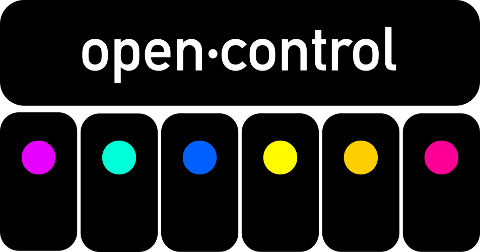
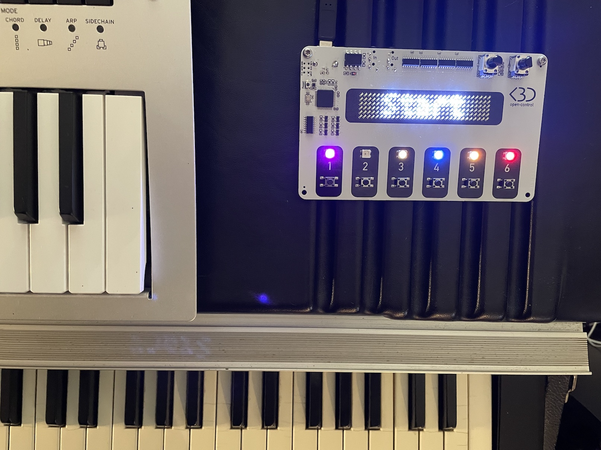
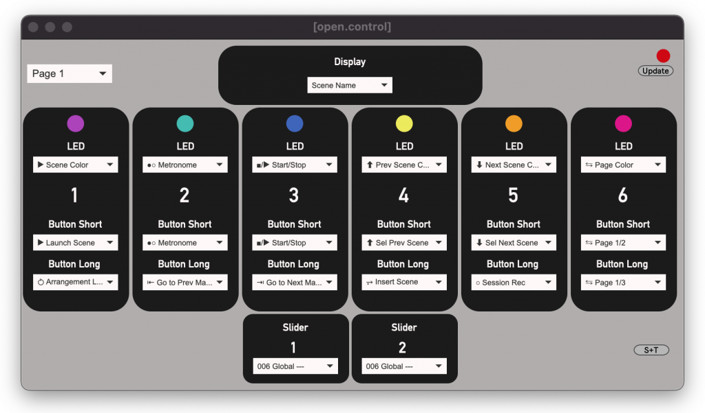

open·control is a Control Surface for Ableton Live that adapts to your needs.
It has a large and bright display, 6 buttons and 2 sliders that you can configure exactly the way you want.

1 controler, 3 flavors
open·control comes in 3 flavors:
{% include feature_row %}
Each version has the same set of features, simply choose how you want to control it.
Create your own layout
Each element of the controller can be changed instantly with an easy to use Web Editor.
You can creaate up to 3 pages of controls.

Available Actions